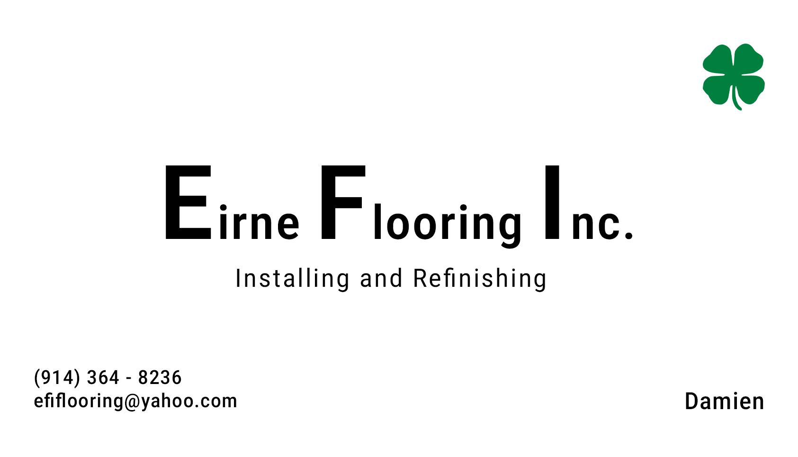

My Files
My Files Internet ExplorerPhotos
Internet ExplorerPhotos Videos
Videos Media PlayerYoutube ChannelPortfolio Projects
Media PlayerYoutube ChannelPortfolio Projects Latest Work
Latest Work HelpSettings
HelpSettings Log Off
Log Off Conor
Internet Explorer
My Files
Media Player
readme.txt
Conor
Internet Explorer
My Files
Media Player
readme.txt
 Projects
Projects

My Project Categories
Browse through three main sections: Graphic Design, Video Editing, a Film Reel. Each category contains real client work, creative concepts, and professional projects across mediums.
Graphic Design
Video Editing
Film Reel
Creative Film Reel
A curated reel featuring narrative work, cinematography, and editing. Includes short film highlights, branded sequences, and original visuals — demonstrating visual storytelling, pacing, and camera work across multiple genres.
Brand Identity Projects
These branding pieces were created as part of my design work at The UPS Store, where I collaborated directly with clients to develop business cards, menus, promotional graphics, and logos tailored to their businesses. Each project reflects a unique brand voice, while maintaining clarity, structure, and print-readiness.
Experimental & Promotional Packaging
A small collection of bold, creative package design explorations — from playful consumer products to conceptual packaging for retail. These projects balance attention-grabbing visuals with structure, hierarchy, and print production constraints.
Typography-Driven Experiments
A collection of kinetic, experimental, and layout-focused projects centered around expressive and functional use of type. These projects span motion, print, and digital — each one emphasizing form, rhythm, and the emotional power of letterforms.
St. Mark Baptist Church – Brand Case Study
Visual Identity · Print Design · Community Engagement
Project Brief
St. Mark Baptist Church, a historic Black Baptist congregation in Yonkers, NY, requested a redesign of their outdated business cards. Their previous design was a plain white layout with a generic PNG graphic of a “modern church” and centered contact info. The reverse side was completely blank.
The client’s ask: “Make it pop.” My goal: give them a visual identity that reflects their actual space, community, and values.
Visual Audit & Research
I started by reviewing a reference photo and studying the church exterior via Google Street View to capture its structure — a recognizable gabled facade, tall central window, and brick detailing.
Design Insight: Replace the generic icon with a custom, minimalist logo based on the church’s real architecture.
Typography & Layout (Front)
Contact details were restructured using a classic serif typeface for names and headers, paired with a clean sans-serif for legibility. Layout spacing was refined for hierarchy, rhythm, and clarity.
Color & Design (Back)
For the reverse, I designed a colorful event promo area in deep plum and warm gold tones — inspired by stained glass. Rounded motifs and bold headers create an uplifting, energetic contrast to the reserved front.
Final Deliverables
- Print-ready business cards (front + back)
- Custom vector logo for branding use
- Modular contact layout for use in letterheads and signage
Client Feedback
⭐ ⭐ ⭐ ⭐ ⭐“We didn’t know how to explain what we wanted — but this is exactly it. It looks like us.”
Reflection
This case reminded me how powerful it is to translate “make it pop” into a clear, branded visual story. It’s not just design — it’s identity.
Clover Carpentry & Contracting – Business Card Design
Print Design · Trades Branding · Minimalist Aesthetic
Project Brief
A local independent contractor needed a clean, professional business card for his carpentry and construction business. His only request? “Make it simple, readable, and include a clover.”
Design Approach
I created a strong, no-frills layout using Montserrat and a custom 3-leaf clover icon. The card emphasizes clarity, professionalism, and just a touch of character — like the client himself.
Design Details
- Font: Montserrat Medium/Regular
- Layout: Left-aligned grid, structured spacing
- Color: Black on off-white matte stock
- Icon: Minimal clover tucked bottom-right
Client Feedback
“This is exactly what I was looking for. Ordered a hundred. Can’t wait to hand them out.”
Deliverables
- Business card (print-ready PDF w/ bleed)
- Vector clover icon
- Grayscale alternate for invoice headers
Reflection
Design doesn’t always have to shout. This was a reminder that thoughtful layout and one meaningful graphic can say everything you need to.
Cookies & Beyond
Complete Brand System for a Boutique Dessert Business
🍪 Overview
Cookies & Beyond is a woman-owned, boutique dessert brand based in White Plains, NY. The client approached me to create a cohesive identity across print and digital touchpoints. From logo to Instagram story templates, the goal was to make her treats as visually delicious as they are edible.


🎨 Color & Type Palette

We used soft natural tones inspired by baked goods: warm cream, cocoa brown, a hint of raspberry pink, and golden caramel.
🛠️ Brand Assets
- Logo: Script-style with a swirl ampersand
- Fonts: Rounded sans-serif paired with delicate serif headers
- Consistency: Carried across digital, print, and packaging


📲 Social Media Templates


📦 Deliverables
🧠 Reflection
Helping Cookies & Beyond bloom into a full visual identity was like baking a brand from scratch. We brought charm, strategy, and consistency to every touchpoint — from business cards to cookie boxes to Instagram reels. A delicious success.
Emerald Bud
Luxury Packaging for a Boutique Cannabis Brand
🌿 Project Overview
Emerald Bud needed a packaging system that looked high-end but approachable. The goal was to elevate the brand to compete on dispensary shelves without losing its earthy, holistic roots.


Design Notes
- Matte black base with emerald foil stamp
- THC/legal info integrated cleanly on back panel
- Botanical elements subtly embossed in background
Pow Pow Crunch
Conceptual Cereal Box for a Fictional Sugar Bomb
🥣 The Brief
A wild, punchy cereal box built for kids and nostalgic adults. This project let me lean into maximalist typography, explosive visuals, and mascot-driven storytelling.


Highlights
- Y2K-style chunky type and vibrant colors
- Side panel nutrition designed in pixel font
- Includes back-of-box maze + quiz game
SockTube™
Socks... Packaged Like Chips?
🧦 Concept
This fictional packaging line reimagines how everyday apparel is presented. Socks are rolled and sealed in a foil-lined “chip tube” for vending machines and boutique shops alike. It’s part satire, part consumer experiment.


Design Features
- Minimalist Helvetica-based labeling
- Soft-touch matte wrap with foil lid
- Includes odd flavor names like “Argyle Dill” and “No-Show Nacho”
Lyrics in Motion
Kinetic Type · Motion Design · Sound-Responsive Layout
🎧 Project Overview
This motion graphics study syncs dynamic typography with a vocal performance — transforming each beat, pause, and word into a rhythmic visual pulse. Each lyric reacts with scale, timing, and motion to mirror the delivery and tone of the verse.


Techniques & Tools
- After Effects (3D camera + text animation)
- Font: Monospaced + Condensed Sans
- Timing manually matched to waveform
- Visual accents hit on beat drops + vocal emphasis

Typo:Editorial
Swiss-Style Layout · Poster System · Visual Hierarchy
📐 The Concept
This is a modular poster system built on strict grid structure — inspired by editorial layouts and Swiss International Style. Each poster explores a different typographic technique while sticking to a strict column and baseline rhythm.


Design Principles
- Grid: 8-column system, modular baseline spacing
- Typefaces: Neue Haas Grotesk + Bodoni
- Color: One accent per composition, rest in grayscale
- Each poster acts as a “lesson” in balance, contrast, and space

TypeMood Zine
Print & Web Zine · Typeface Personality Showcase
🧠 Overview
TypeMood is a conceptual mini-zine exploring the moods and personalities behind different typefaces. Each spread is dedicated to a single font and its visual “voice,” using original phrases and layout styles that embody its identity.


Features
- Hand-assembled spreads in InDesign
- Each font shown in real-world usage: ads, menus, web UIs
- Distributed as both PDF + vertical scroll site

Product Ad Cut
Commercial Editing · Promo Spot · Visual Rhythm
🎯 Overview
A sleek 30-second promotional edit for a fictional smart wearable. This project focused on rhythm-matched cuts, animated overlays, and tight commercial pacing — the kind of quick, slick video you'd see pre-roll on YouTube or TikTok.
Details
- Edited in Adobe Premiere Pro
- Overlay animation in After Effects
- Cut-to-beat pacing with tight zoom transitions
- Product, hands, and lifestyle B-roll sourced and composited


Opening Titles
Cinematic Title Design · Visual Atmosphere · Sound Design
🎬 Project Description
A mood-driven opening title sequence inspired by modern drama TV. Created as a speculative intro for a fictional psychological thriller, this piece pairs text, atmosphere, and slow montage to create an unsettling tone.
Process
- Footage sourced and recolored to match tone
- Type layout in After Effects using tracked motion
- Atmospheric ambient soundtrack + risers
- Influenced by titles like Mindhunter and Sharp Objects


Fracture
Experimental Editing · Timeline Deconstruction · Visual Metaphor
🧩 Concept
Fracture is a conceptual video piece about memory loss and nonlinear perception. Through editing techniques like glitch overlays, time reversal, jump cuts, and layered timelines, the video mimics a fractured psychological state.
Techniques
- VHS distortion and analog overlays
- Reverse time sequences + flicker masking
- Use of opacity ghosts and color splits
- Sound design: pitch-shifted dialogue + reverb stack


Connecting to the Internet...

 Youtube Channel
Youtube Channel
 Wikipedia
Wikipedia
 Projects
Projects
Consistencyy
878 subscribersNew Community Post
Just wrapped a crazy animation loop for an upcoming music drop. Stay tuned 🎥🔥
Posted 2 days agoNew Community Post
Just wrapped a crazy animation loop for an upcoming music drop. Stay tuned 🎥🔥
Posted 1 week ago
Latest Upload:
VG Concept Pixel Art
Shorts
What's your definition of love?
Resonance Nights
TAKE OFF (Cooking)

SPACING OUT
Recommended
Medicine - Daughter [MV/Original Cover]
MGMT - Little Dark Age (Prødigy Remix) MUSIC VIDEO
mounika - cut my hair (music video)
More videos from CONSISTENCYY...
VG Concept Pixel Art

Eminem If he was RESONANCE

Jean Dawson - POWER FREAKS

world$tar money - channel bumper

KENDRICK LAMAR - FOR SALE?

TAKE OFF.
somethings always wrong with his brain
WHATS YOUR DEFINITION OF LOVE?

the burn marks on my memories never fade
FAVORITE SONGS OF ALL TIME (OAT)
ANIMATIONS & MORE
More videos from CONSISTENCYY...
Loading title...
Loading description...
Loading date...
Wikipedia
The Mock Free Encyclopedia
About Me
This is a mockup page display for my resume.
Conor McCutcheon
Designer, Editor & Notary Public
YONKERS, NY · conor.style · conormcc.edits@gmail.com
Summary
Graphic Designer with expertise in motion graphics, typography, brand identity, and video production. Proficient in Adobe CC (Illustrator, Photoshop, InDesign, Premiere Pro, After Effects), DaVinci Resolve, Blender, and AutoCAD. Experienced in video production, DSLR/drone operation, and color grading. Eager to contribute fresh ideas and energy to a creative team. Quick learner with a passion for design trends and visual storytelling.
Experience
The UPS Store — Graphic Designer & Notary Public
Aug. 2024 – Present
- Created custom marketing and branding materials: business cards, flyers, posters, and certificates.
- Optimized images for print/digital formats.
- Collaborated directly with customers to translate ideas into compelling designs.
PopGeeks.com — Production Assistant, Designer
Aug. 2023 – Present
- Designed branded content including business cards, blog visuals, and social media assets.
- Updated site and blog posts using HTML/CSS for a multimedia experience.
- Shot and edited live events, managing DSLR workflows and post-production.
Freelance — Designer & Video Editor
2021 – Present
- Delivered branding packages, social media assets, and promotional videos for diverse clients.
- Led all stages of production: planning, graphics, revisions, and final delivery.
- Adapted creative styles to meet unique brand messaging needs.
Education
BA in Graphic Design, Minor in Film & Media Studies — SUNY at Buffalo, 2023.
Licenses & Awards
- Certified Notary Public, State of New York (2025–2029)
- FAA TRUST Drone Certification, 2025
- Winner, NHTSA Video Entry Contest, 2023
About
| Born | 2001 |
| YT Channel | Consistencyy |
| Profession | Artist |
| Specialties | Motion, Design, Film |
Notable Works
VG Pixel Art
Concept animation experiment.
Power Freaks
Visualizer for Jean Dawson.
Burn Marks
Visual poetry short.